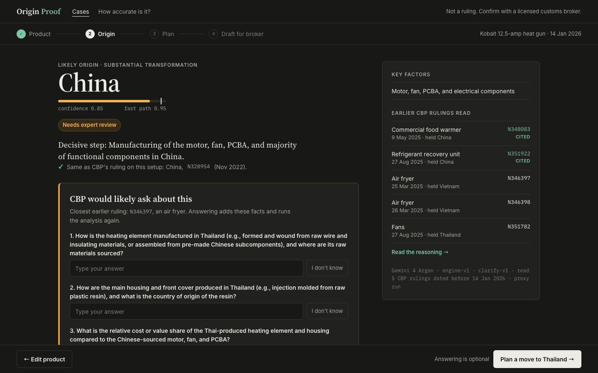
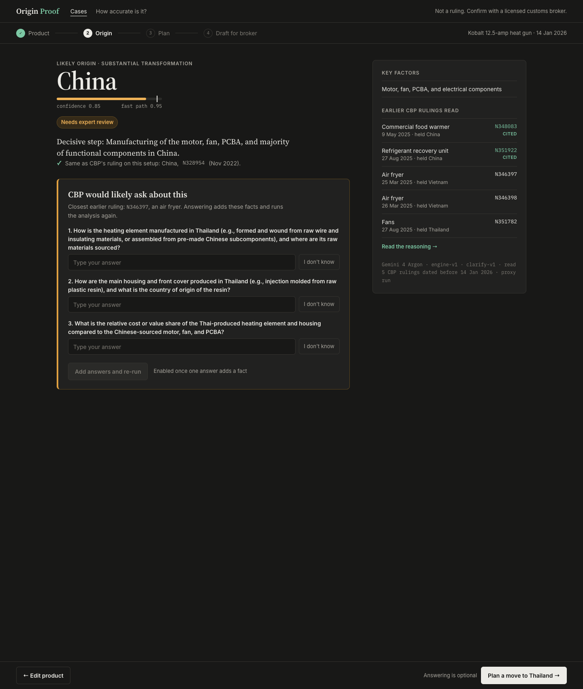
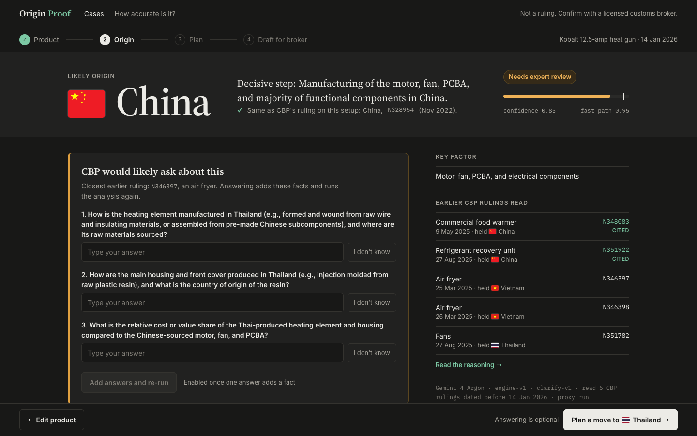
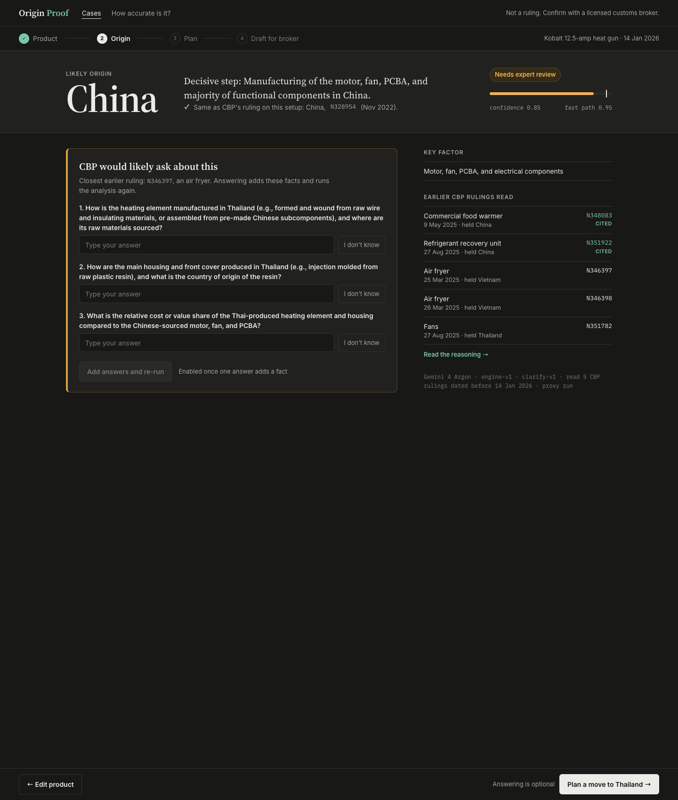
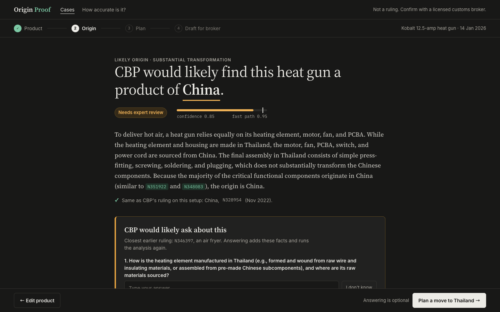
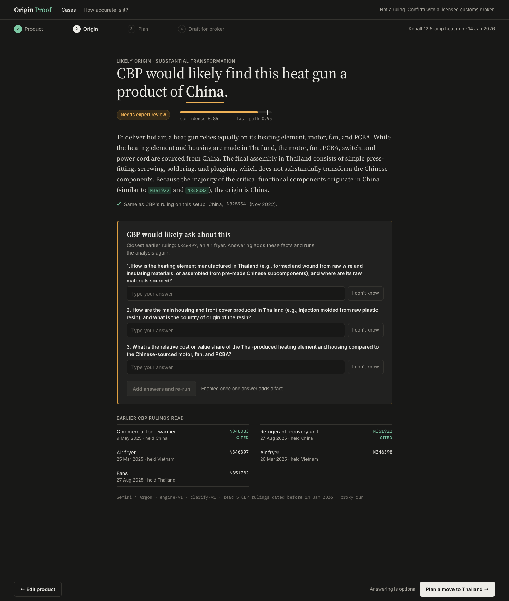

The Result screen (step 2 of the flow) is the key screen: it carries the headline of the demo. Three compositions in direction F, all with the recorded heat-gun response word for word. Components on it: the verdict, a confidence meter against the 0.95 fast path, the status, the decisive step, a check against CBP's ruling on the current setup, the follow-up questions with "I don't know", the earlier rulings with cited ones marked, and an audit line (model, prompt versions, ruling cut-off). Run the 10-second test →
"Plan a move to Thailand" is always enabled ("Answering is optional"), so there's no disabled button next to "Plan anyway". "Add answers and re-run" stays disabled until one answer adds a fact. "Cited" moves under the ruling number instead of wrapping. The check against CBP's 2022 ruling (N328954) gives a judge a reason to trust the answer.
The locked layout b with the fixes: verdict, meter and status on the left, evidence panel on the right.


A full-width band carries the whole answer in one row: China, the decisive step with the CBP check, then status and confidence. Questions and evidence sit below in two columns.


Like a ruling letter: "CBP would likely find this heat gun a product of China", then the model's reasoning with the cited rulings inline.

